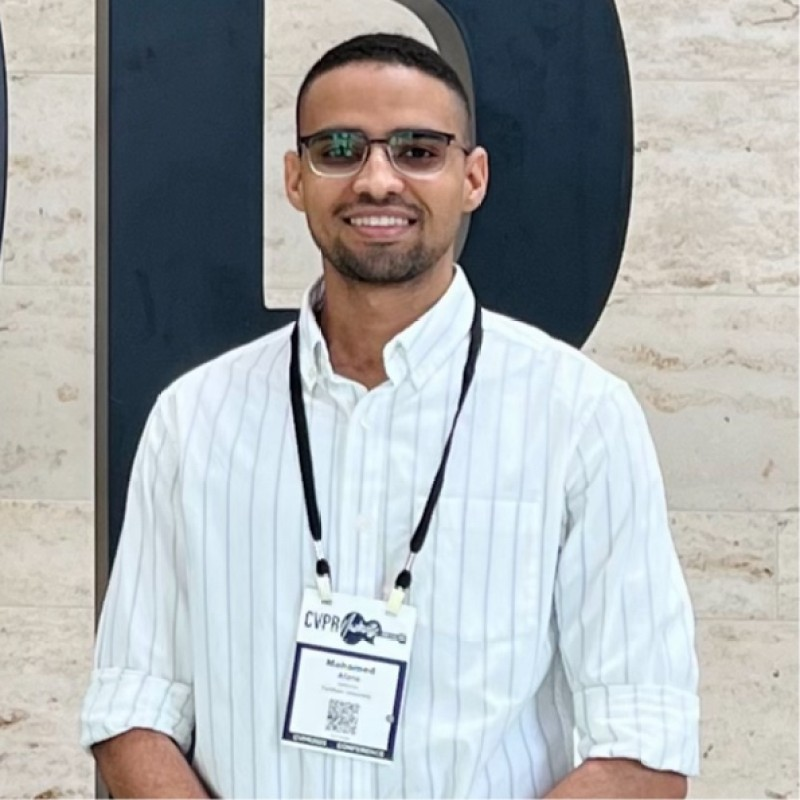
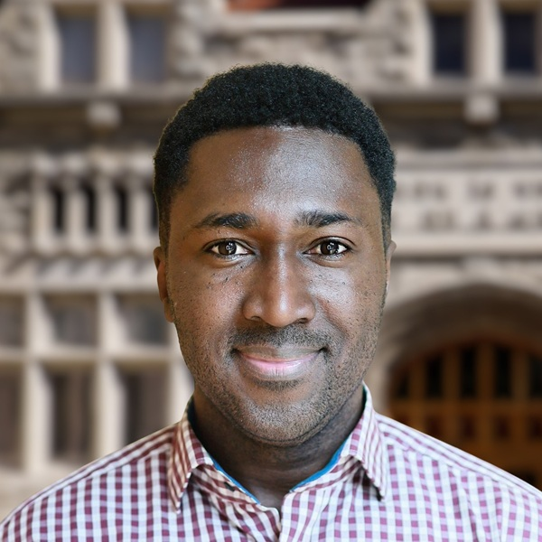
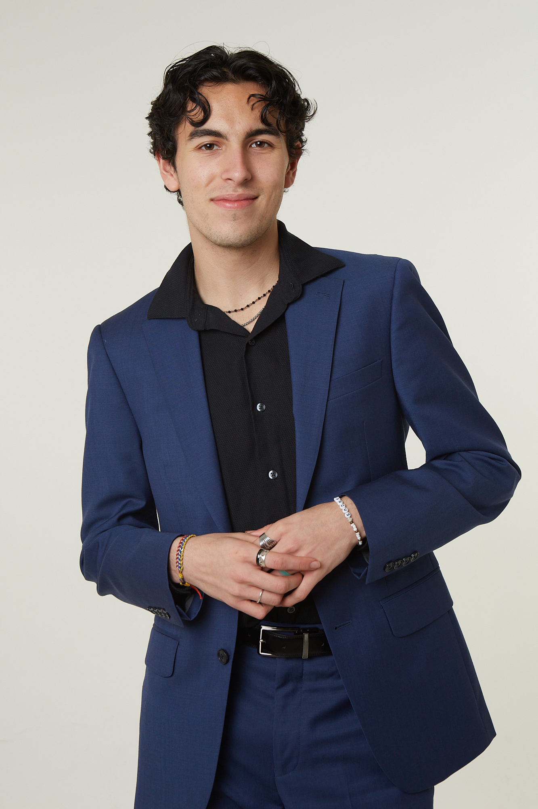
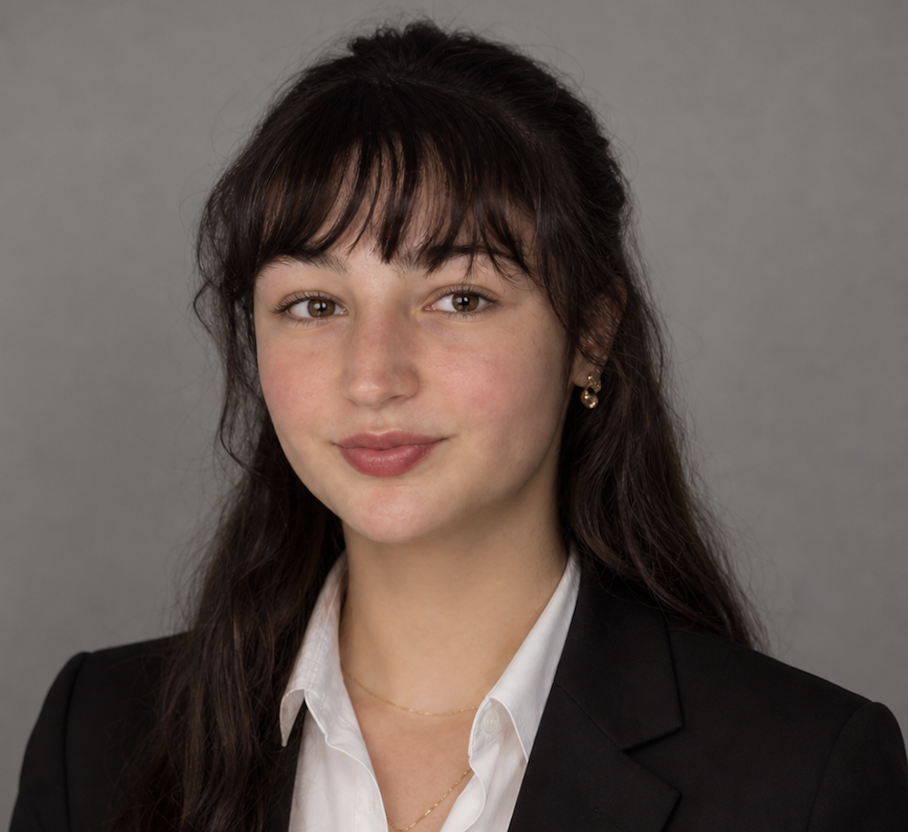
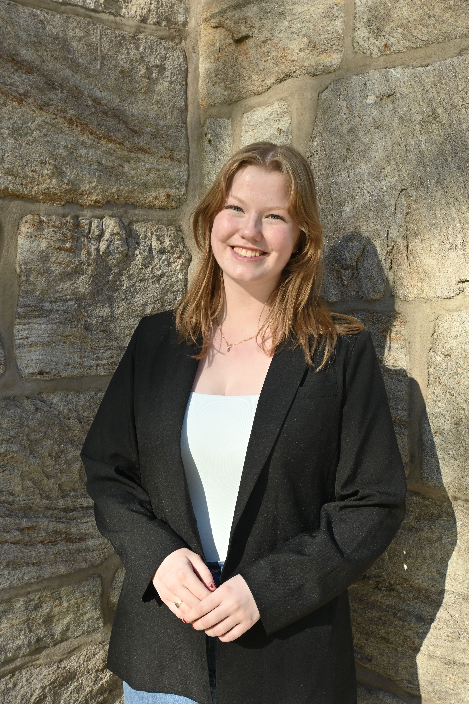
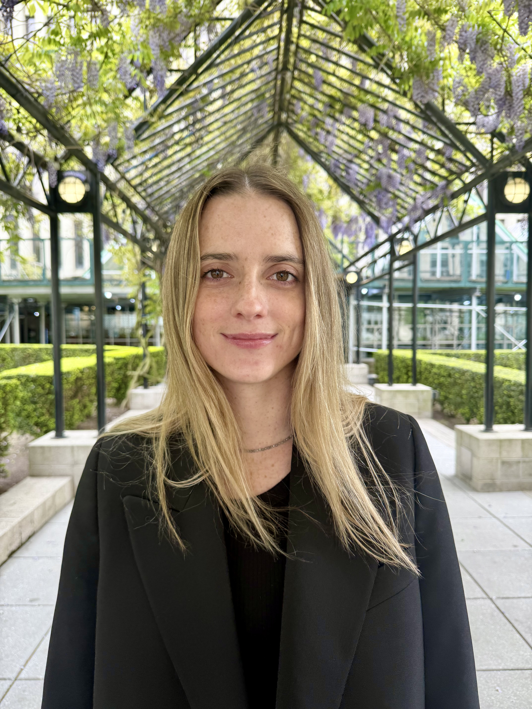
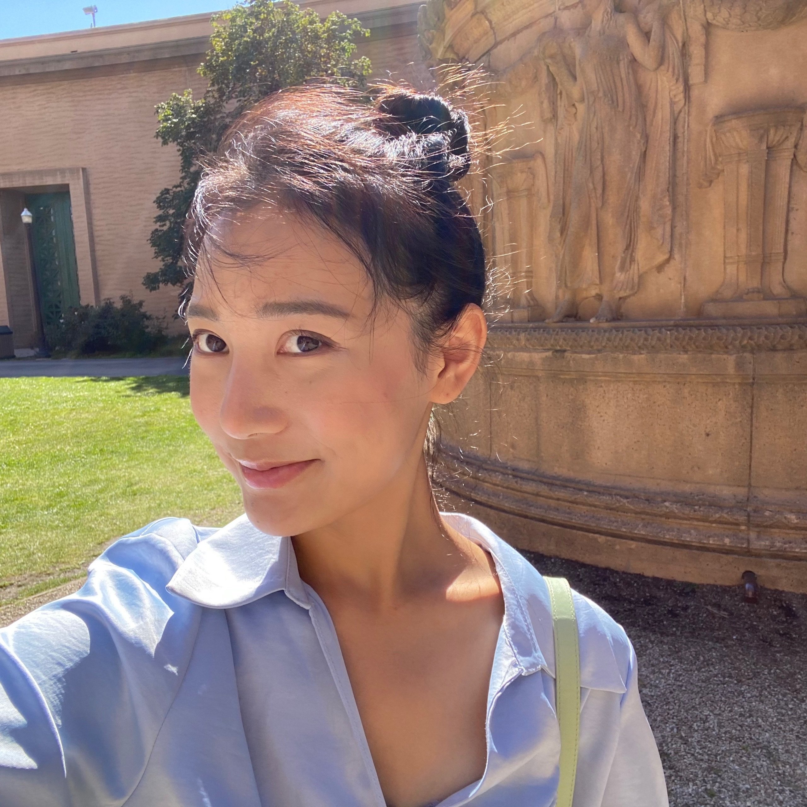
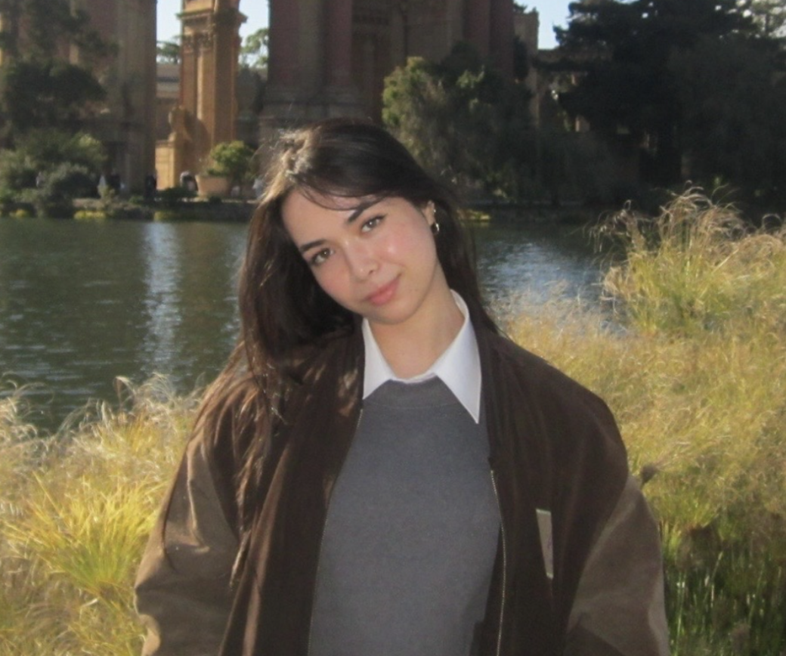
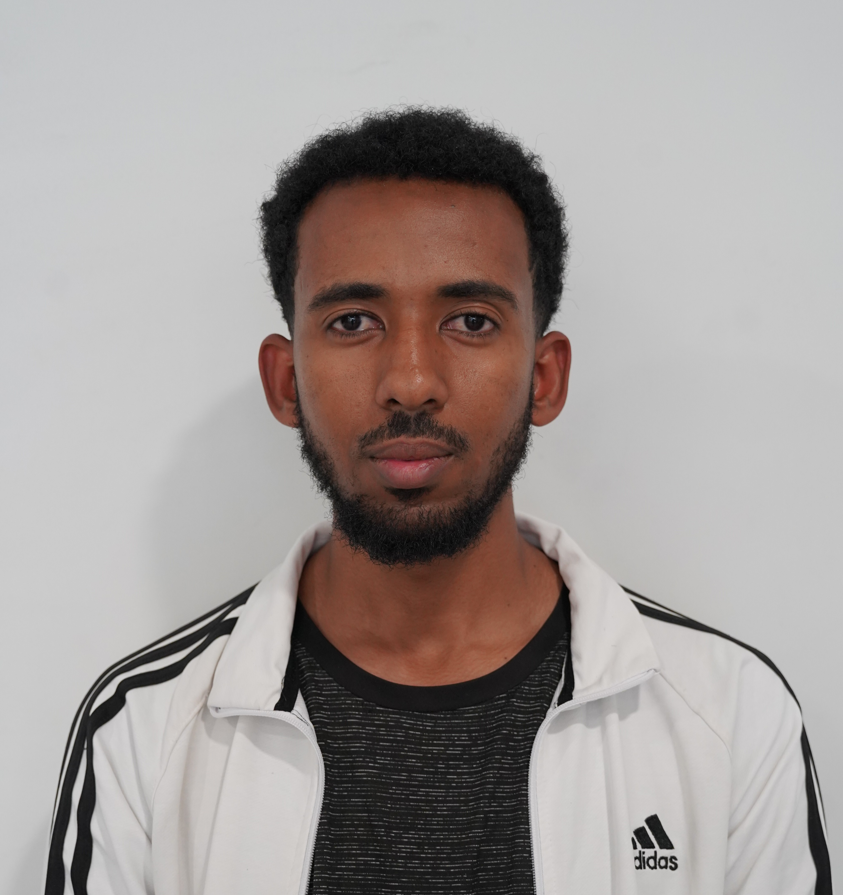

The Tortorella Initiative brings together a Faculty Director, research mentors, and an inaugural cohort of student Research Fellows working at the intersection of quantitative methods and social justice.
Department of Computer and Information Sciences
Fordham University, New York
Dr. Chen provides scholarly leadership for the initiative, overseeing research design, mentoring, and the academic direction of Tortorella Fellows. His research intersects computational methods, data science, and community-engaged scholarship, with a focus on applying rigorous quantitative approaches to problems of social significance.
Tortorella Fellows are paired with research mentors who provide methodological guidance and collaborate with them on community-engaged projects.
Dr. Qiang Pu is an Assistant Professor of Behavioral Science and Health Equity at Saint Louis University's College for Public Health and Social Justice, and a Fellow of the Taylor Geospatial Institute. He holds a Ph.D. in Geography from SUNY Buffalo and earlier degrees in Cartography & GIS Engineering and Geomatics Engineering from Central South University. His research focuses on air pollution, climate and health, GIScience, and environmental health — drawing on machine learning and spatial statistics.

Mohamed Afane is a Research Fellow at the Stanford RegLab. He holds an undergraduate degree in Electrical Engineering from ENSAM Casablanca, an M.S. in Energy Engineering from the University of Illinois Chicago (Fulbright Program), and an M.S. in Data Science from Fordham University. While at Fordham, he worked on research involving LLMs, computer vision, quantum computing, and public health. His current research centers on NLP, with a focus on benchmarking and reasoning in LLMs. More broadly, he is interested in applying AI and machine learning to problems of public interest.
The inaugural cohort of Tortorella Research Fellows brings together undergraduate and graduate students from across Fordham University working on housing, health, legal access, and broader questions of social equity.

Frederic Bomba is a graduate student in the International Political Economy and Development program at Fordham University. Prior to joining Fordham, he worked in banking. His interests lie at the intersection of economic freedom, business, and social justice, and he hopes to pursue a career as a research or policy analyst.

Marcus Gonzalez is a student at Fordham University pursuing a double major in Interdisciplinary Mathematics & Economics and Environmental Studies. He has worked across organizations ranging from the UN Sustainable Development Solutions Network to a sustainable-development consultancy in Argentina. His interest in sustainability and social justice is rooted in witnessing the impacts of climate change in his hometown in South Florida. Marcus serves as a Staff Editor for the Fordham Undergraduate Law Journal (focus: environmental law) and as Secretary of the Immigration Advocacy Coalition at Fordham.

Katerina Kleinschmidt is a rising senior in the Rose Hill Honors Program at Fordham University, studying Political Science, Philosophy, and Economics on the Pre-Law track. Following graduation, she hopes to pursue both a J.D. and an M.S. oriented toward advocacy and civil service. Katerina joined the Tortorella Initiative to further explore the role of empirically driven research in shaping effective public policy and institutional reform.
Muhammad Zawad Mahmud is a first-year M.S. student in Computer Science at Fordham University. His research spans applied machine learning, computer vision, and security & privacy — with a focus on federated learning, membership inference attacks, intrusion detection, and novel view synthesis. His work emphasizes systems that are both technically rigorous and mindful of data ethics.

Ellie McCain is a rising senior at Fordham College at Rose Hill studying Psychology and English with an honors concentration in American Catholic Studies. She is interested in how moral values shape social relationships, empathy, and migration justice. This summer she is volunteering with the Empathy and Moral Psychology Lab at Penn State, and will begin writing her senior thesis in the fall. Outside the lab and classroom, Ellie enjoys reading, listening to 70s folk, and singing with the Fordham Satin Dolls.
Erin Moran-Meder earned her B.A. in Psychology from Hope College (2024) and is completing an M.S. in Clinical Research Methodology at Fordham University under the mentorship of Dr. Dean McKay. Her work has led to several peer-reviewed publications. Erin was recently accepted into the Clinical Psychology doctoral program at the University of North Texas, where she will continue investigating innovative treatments for anxiety and related disorders with Dr. Samuel Spencer.

Katie Muschalik (she/her) is a first-year M.S. student in Clinical Research Methods in the Department of Psychology at Fordham University. She earned her B.A. in Cinema and Media Studies at the University of Southern California. Her research centers on the mechanisms underlying obsessive-compulsive behaviors, with a particular interest in how technologies like social media, virtual reality, and large language models may help or hinder treatment outcomes. She hopes to leverage her research to improve help-seeking behaviors and treatment adherence across clinical contexts.

Sherri Son (Chaeri Son) is a graduate student at Fordham University pursuing an M.S. in Data Science. Her interests span machine learning, reinforcement learning, and urban studies, with a focus on housing and sustainable real estate. Through her research and coursework, she hopes to use data-driven tools to build more equitable and livable cities.

Michelle Teicher is a rising senior at Fordham University on the Pre-Law track, majoring in Psychology and minoring in Philosophy. As a Research Fellow in the inaugural cohort, she is particularly interested in exploring questions related to tenancy law and gentrification. Michelle looks forward to collaborating with faculty and peers on research within the Initiative's scope of housing equity, public health, and law and policy. Outside of academics, she enjoys reading and walking through unexplored areas of the city.

Biniyam Zergaw is an M.S. in Data Science student at Fordham University. He completed his bachelor's in Software Engineering at Addis Ababa Institute of Technology. He worked as a software developer and project lead for a startup before joining Fordham for his graduate study. Biniyam was a member of the United Nations Development Program Machine Learning 2025 cohort. As a graduate research assistant and Tortorella Research Fellow, he is interested in using data science and machine learning to help understand community issues. He looks forward to collaborating with researchers and community partners to make a difference.